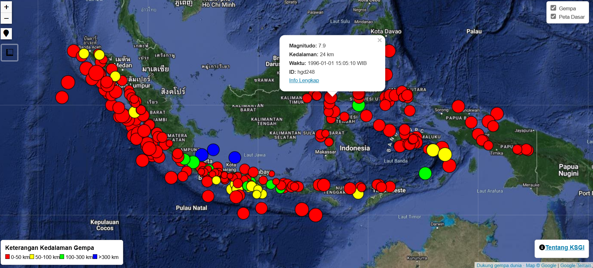
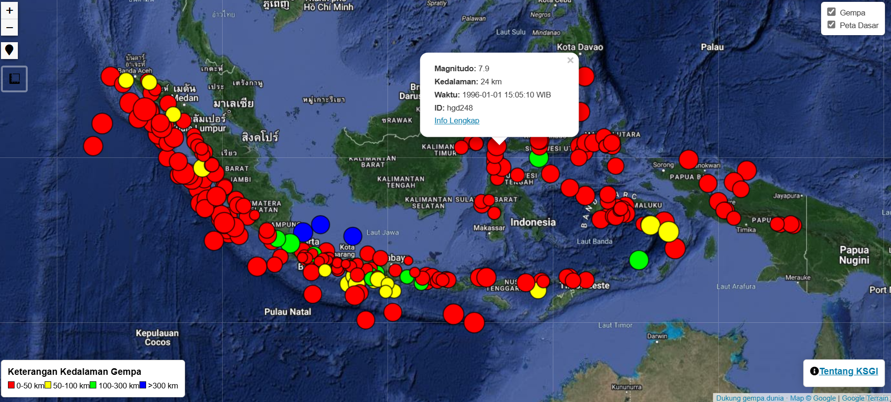

gempa.dunia © 2023 - ~
GEMPA INDONESIA


Atribut pangkalan data ini akan menjelaskan istilah-istilah yang dipakai dalam penyimpanan atribut pangkalan data. Magnitudo merupakan satuan kekuatan gempa yang berhubungan dengan total pelepasan energi gempa tersebut. Kedalaman merupakan jarak titik asli/permulaan gempa ke permukaan. Waktu merupakan atribut yang berisi informasi kapan gempa terjadi. ID merupakan tanda pengenal setiap peristiwa gempa dalam pangkalan data hgd.
Katalog ShakeMap Gempa Indonesia merupakan proyek independen non-profit dari @gempa.dunia untuk menggabungkan seluruh katalog gempa signifikan Indonesia yang tersedia, dan memvisualisasikannya menjadi Peta Guncangan (ShakeMap). Secara garis besar, Indonesia mempunyai aktivitas seismik dengan sejarah kegempaan yang sangat panjang. Sayangnya, belum ada katalog gempa di Indonesia yang dibuat dengan visualisasi yang interaktif tersebut. KSGI lahir dengan semangat untuk menjadi katalog satu pintu gempa bersejarah di Indonesia. Tentunya KSGI tidak akan memasukkan seluruh peristiwa gempa bumi di Indonesia karena kebanyakan peta guncangan modern (1900-Sekarang) sudah tersedia di dalam katalog kegempaan USGS. KSGI akan berfokus pada peristiwa bersejarah sebelum 1950, namun juga akan memasukkan ShakeMap pasca 1950 jika terdapat perbaruan data, atau hal serupa.
Sumber data katalog gempa ini berasal dari Badan Geologi (2023), Katalog Tsunami BMKG (2019), Katalog Gempa BMKG (2019), serta Martin dkk., (2022), untuk lebih lengkapnya, klik gambar dibawah untuk link setiap sumber data. Terdapat juga sumber data lain seperti Musson (2012) dan katalog kegempaan lain, yang akan disebut secara tersurat di referensi setiap halaman peristiwa. Tidak setiap gempa memiliki kekuatan dan kedalaman yang tercatat pada katalog gempa bumi, oleh karena itu kami akan memodelkan gempa tersebut berdasarkan 3 faktor utama yakni sebaran guncangan, intensitas, dan apakah terdapat tsunami dalam kejadian tersebut. Tidak ada metodologi khusus untuk mendapatkan kekuatan dan kedalaman gempa karena kedua parameter tersebut dipilih secara acak berdasarkan 3 faktor diatas (Try and error). Kecocokan model dengan sumber data dapat dilakukan dengan menghitung RMSE gempa (seperti dalam Nguyen dkk., 2015), namun hal tersebut tidak dilakukan dalam katalog ini karena sumber daya yang terbatas. Perlu dicatat bahwa solusi kekuatan dan kedalaman gempa merupakan hasil pemodelan dan bisa jadi berbeda dengan kejadian asli, namun solusi tersebut merupakan pemodelan yang dapat menjelaskan 3 faktor yang ada dalam suatu gempa.
LATAR BELAKANG : APA ITU KATALOG SHAKEMAP GEMPA INDONESIA?


 
